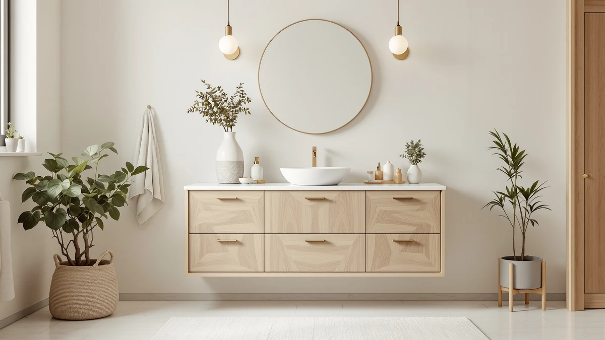

How to Refinish Bathroom Vanity (2026)
Prices and picks verified as of August 2026. Independent, reader-supported reviews.


Things to Know Before You Buy
- Plan on two days, not one. Most of the time is drying time between coats, not active work. You'll spend about four to six hours with tools in hand across the whole project.
- Materials run $40 to $70. Sandpaper, primer, paint or stain, and a topcoat cost far less than a replacement vanity, which typically starts around $200.
- You don't need to remove the countertop or sink. A full bathroom vanity refinish only requires pulling the doors, drawer fronts, and hardware off the cabinet box.
- Solid wood and wood veneer refinish best. Laminate and thermofoil vanities need a bonding primer made for slick surfaces, or the new finish peels within months.
- Ventilation matters. Open a window or run a fan the whole time you sand and paint, since bathrooms trap fumes and dust more than any other room in the house.
Knowing how to refinish bathroom vanity cabinets lets you update a dated bathroom in a weekend without tearing out a cabinet that still has years of life left in it. Most vanities look tired because of surface wear, not structural failure, and a sander, a coat of primer, and fresh paint or stain solve that problem for a fraction of what a new vanity costs.
These five steps take a vanity from scuffed and dated to camera-ready, and the prep work in the first two steps is what actually decides whether the new finish holds up. Refinishing works best on solid wood, wood veneer, and previously painted cabinets. If your vanity is laminate, thermofoil, or swollen from water damage, check the FAQ section below before you start, since those surfaces need a different primer or, in the case of water damage, a full replacement.
What You'll Need
- Supplies: fine-grit sandpaper (120- and 220-grit), a stain-blocking bonding primer, cabinet-grade paint or stain, a clear polyurethane topcoat, tack cloths, and painter's tape
- Tools: a random orbital sander, a foam roller and angled sash brush, a putty knife for wood filler, a screwdriver, and a drop cloth to protect the floor while you refinish the bathroom vanity
Step 1: Remove the Hardware and Protect Your Space
Start by pulling every door and drawer front off the vanity cabinet, along with the hinges, knobs, and pulls. Set the hardware aside in a labeled bag if you plan to reuse it, since finding the right screws again later wastes more time than you'd expect. Working on the doors separately from the cabinet box also gives you flat, easy-to-reach surfaces once you get to sanding and painting.
Next, protect the room. Lay a drop cloth across the floor and tape plastic sheeting or a towel over the countertop and sink to catch dust and drips. Painter's tape along the wall, the countertop edge, and any trim you aren't refinishing keeps the project contained to the vanity itself.
Open a window or point a fan out of the bathroom before you go further. You're about to generate fine sanding dust and, later, paint fumes, and a bathroom with no ventilation traps both far longer than a bedroom or garage would, so ventilate well before you refinish a bathroom vanity.
Step 2: Sand Every Surface to Break the Old Finish
Run a random orbital sander loaded with 120-grit paper over every surface you plan to refinish, including the cabinet frame, the door faces, and the drawer fronts. You aren't trying to strip the vanity down to bare wood. The goal is to scuff the existing finish enough that primer has something to grip, so a dull, even scratch pattern across the whole surface is what you're after.
Get into edges, corners, and any routed detail with a sanding sponge, since the orbital sander can't reach into panel grooves or profiled edges. Switch to 220-grit paper for a second pass once the surface looks uniformly dull, which knocks down the deeper scratches from the first grit and leaves a smoother base for primer.
Wipe the entire vanity down with a tack cloth or a barely damp microfiber towel to pull off the sanding dust. Dust left behind gets trapped under the primer and shows up as a gritty texture once the finish dries, so dust control is the single most common cause of a rough result on an otherwise well-planned bathroom vanity refinish.
Step 3: Clean, Fill, and Prime the Vanity
Wipe down every sanded surface with a degreasing cleaner, since bathroom vanities pick up toothpaste splatter, soap film, and hand oils that plain water won't fully cut. A cloth dampened with water and dish soap, followed by a clean-water wipe, works fine. Let the wood dry completely before you move on, since primer applied over damp wood traps moisture underneath.
Press wood filler into any dents, gouges, or old hardware holes you aren't reusing, then let it cure according to the label and sand it flush with 220-grit paper. Skipping this step is the difference between a vanity that looks refinished and one that looks patched, since every unfilled ding still shows through paint.
Apply a stain-blocking bonding primer with a foam roller for flat panels and an angled brush for edges and corners, working in thin, even coats rather than one heavy pass. A thin coat dries faster and levels out smoother, and it's easier to add a second coat than to sand out drips from an overloaded roller. Let the primer dry fully, generally an hour or two, before you touch the surface again. That patience is what separates a clean bathroom vanity refinish from a rushed one.
Step 4: Apply Paint or Stain in Thin Coats
Once the primer is fully dry, apply your first coat of cabinet-grade paint or stain with the same roller-and-brush combination you used for the primer. Thin coats matter more here than at any other stage, since a heavy coat of paint sags and pools in corners, and a heavy coat of stain dries blotchy. Load the roller lightly and unload the excess on a paper plate before each pass across the vanity.
Let the first coat dry for the time the product label specifies, usually two to four hours for paint and less for stain, then run a 320-grit sanding sponge lightly over the surface to knock down raised grain or dust nibs. Wipe away the dust and apply a second coat. Most vanities need two coats of paint for full, even coverage, and older vanities with a dark original stain often need a third coat before the refinish is complete.
Work in the same direction on flat panels, top to bottom or side to side, so brush and roller marks blend rather than crisscross. Check your work under a bright light or natural daylight instead of the vanity's own overhead fixture, since dim bathroom lighting hides thin spots that become obvious once the sun hits them.
Step 5: Seal the Finish and Reassemble
Once your final coat of paint or stain has dried for the full time listed on the can, usually 24 hours, apply a clear polyurethane or polycrylic topcoat. This layer is what actually protects a bathroom vanity from water rings, toothpaste, and daily wiping, so don't skip it even if the paint alone looks finished. Two thin coats of topcoat outperform one thick coat, the same rule that applied to the paint itself.
Give the topcoat real cure time before you use the vanity hard. Most products feel dry to the touch within a few hours but need three to seven days to fully harden, and setting a wet toothbrush cup on the surface too soon can leave a permanent ring. Keep the doors and drawer fronts off the hinges and propped up somewhere flat during this window.
Once everything has cured, reattach the hardware, rehang the doors, and slide the drawers back in. Step back and check the reveal, the even gap around each door, and adjust the hinges if anything sits crooked. That final walk-around confirms your bathroom vanity refinish is done, not simply dry.
Common Mistakes to Avoid
The most common mistake in a bathroom vanity refinish is skipping or rushing the sanding step. Paint and primer bond to a scuffed surface, not a glossy factory finish, so gliding over the cabinet with a few quick passes leaves a slick spot where the new coat peels within weeks. Take the time to dull every surface evenly, including the edges and corners a sander can't reach on its own.
Rushing dry time causes almost as many problems. Bathrooms run humid, which slows curing compared with a garage or spare room, and touching a coat before it has set leaves fingerprints and soft spots that never fully harden. Read the label on your primer, paint, and topcoat, and add extra time in a humid climate rather than assuming the stated dry time applies everywhere.
Heavy coats are another frequent error. A thick coat of paint feels like it saves time, but it sags on vertical surfaces, traps solvent underneath, and takes longer to cure than two thin coats applied back to back. Thin, even layers with light sanding between them produce a smoother, more durable result.
Finally, people skip the topcoat because the paint alone already looks finished. Without it, water from a damp towel or a splashed faucet soaks into the paint within months. A vanity in daily bathroom use needs that extra layer of protection more than furniture anywhere else in the house.
Our Top Picks
If your vanity is too damaged to refinish, or you want to add storage alongside a bathroom vanity refinish, these three picks are worth a look. Prices reflect Amazon listings as of August 2026 and shift over time.

Editor's Pick
18" White Shaker Bathroom Drawer
A shaker-style drawer unit that matches almost any refinished vanity, useful if you need extra storage next to a cabinet you recently painted rather than replacing the whole piece.
$235.05
Check Price on Amazon
Best Value
Linique 24" Bathroom Vanity with
A complete 24-inch vanity priced close to what a full refinish project costs in materials and time, worth comparing if your current cabinet turns out to be water-damaged or structurally shot.
$152.99
Check Price on Amazon
Premium Choice
CHOEZON Lighted Bathroom Medicine Cabinet
A lighted medicine cabinet that pairs well with a newly refinished vanity, since fresh paint tends to make an old, yellowed mirror look worse by comparison.
$99.99
Check Price on AmazonFrequently Asked Questions
Can you refinish a bathroom vanity without removing it from the wall?
Yes. As long as you're not changing the vanity's footprint or plumbing, you can refinish the cabinet in place. Disconnect the sink drain and water lines if painting requires it, but leave the plumbing rough-in alone and focus only on the doors, drawer fronts, and cabinet box.
What kind of paint should I use to refinish a bathroom vanity?
Use a cabinet-grade acrylic enamel, the same category of paint made for kitchen cabinets. It levels smoother than standard wall paint, resists moisture better once topcoated, and holds up to the daily wiping a vanity gets. Avoid flat wall paint, since it scuffs and stains faster in a humid bathroom.
Can you refinish a laminate or thermofoil bathroom vanity?
You can, but it needs a bonding primer formulated for slick, non-porous surfaces instead of the standard primer used on wood. Regular sanding barely scuffs laminate, and skipping the specialty primer is why paint peels off thermofoil cabinets within a season. If the laminate is already peeling or bubbling, replacement is usually the better move.
How long does a refinished bathroom vanity finish actually last?
A properly primed, painted, and topcoated vanity typically holds up three to five years under normal bathroom use before it needs touch-ups. Corners and edges near the sink wear fastest since they take the most contact and moisture, so expect to spot-treat those areas before a full redo is needed.
Is it cheaper to refinish a bathroom vanity or replace it?
Refinishing almost always costs less. Materials for a full refinish run $40 to $70, compared with $150 to $800 or more for a new vanity depending on size and material. Replacement only wins out when the cabinet itself is damaged, water-swollen, or structurally unsound, since no amount of paint fixes a warped cabinet box.
Verdict
Learning how to refinish bathroom vanity cabinets comes down to five steps you can complete in a weekend: strip the hardware and protect the room, sand every surface to break the old finish, clean and prime, apply paint or stain in thin coats, then seal it all with a topcoat once everything cures. Skip a step and the finish shows it within months, usually as peeling primer or a topcoat that never fully hardens, but follow the sequence and a scuffed vanity from the 1990s can look showroom-new for a fraction of the cost of a new cabinet.
If your current vanity is beyond saving, water-damaged, warped, or too small for how you use the space, a shaker-style unit like the Vanity Atelier drawer above gives you the clean look a fresh refinish is going for without the sanding and drying time. Otherwise, grab a sander, block off a free weekend, and get to work. A refinished bathroom vanity is one of the highest-value weekend projects in the house, and now you know exactly how to pull it off.